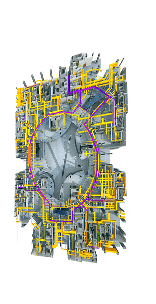
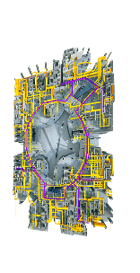

-
1
MODEL COMPLETION
Establishing and creating the visible and multi-dimension Architecture, Structural and MEP 


-
2
CLASH DETECTION
Completing the clash detection among various design parties,engineers and even different organisations in con struction drawings.

-
3
MEP INTEGRATION
Profoundly completing the pipeline integration, design coordination and intra-organisational cooperation between Plumbing, HVAC and Electrical engineering.

-
4
CURTAIN WALL REMEDYING
Creating the abnormity visibly.


-
5
CLASH DETECTION
Completing the clash detection among various design parties,engineers and even different organisations in con struction drawings.


Copyright © 1998-2015 shining Group